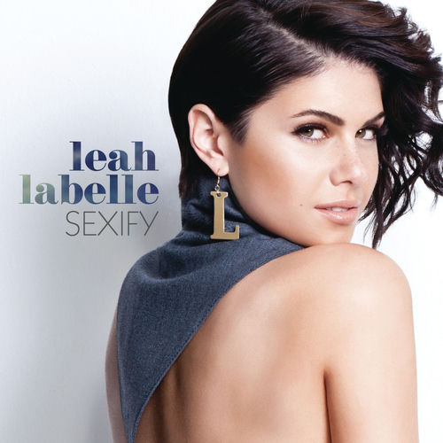

Leah LaBelle
Leah LaBelle Vladowski was an American singer. She rose to prominence in 2004 as a contestant on the third season of American Idol, placing twelfth in the season finals. In 2007, LaBelle began recording covers of R&B and soul music for her YouTube channel. These videos led to work as a backing vocalist starting in 2008 and a record deal in 2011 with Epic in partnership with I Am Other and So So Def Recordings. LaBelle released a sampler, three singles, and a posthumous extended play (EP).
Complete Discography & Tracklists (3)